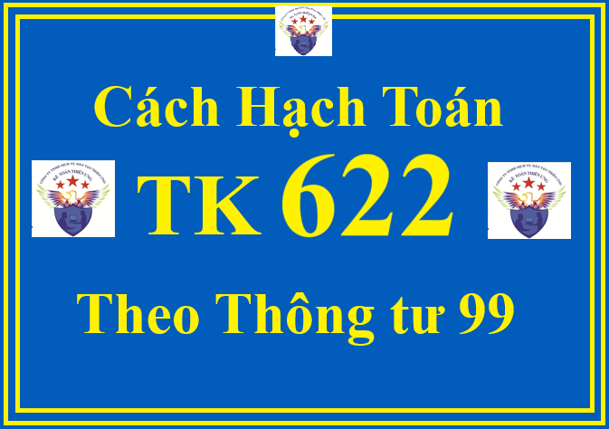

Theo Thông tư 99/2025/TT-BTC thì Tài khoản 622 - Chi phí nhân công trực tiếp dùng để phản ánh chi phí nhân công trực tiếp tham gia vào hoạt động sản xuất, kinh doanh trong các ngành công nghiệp, xây lắp, nông, lâm, ngư nghiệp, dịch vụ (giao thông vận tải, bưu chính viễn thông, du lịch, khách sạn, tư vấn,...).
Chi phí nhân công trực tiếp bao gồm các khoản phải trả cho người lao động trực tiếp sản xuất sản phẩm, thực hiện dịch vụ thuộc danh sách quản lý của doanh nghiệp và lao động thuê ngoài theo từng loại công việc, như: Tiền lương, tiền công, các khoản phụ cấp, các khoản trích theo lương (bảo hiểm xã hội, bảo hiểm y tế, kinh phí công đoàn, bảo hiểm thất nghiệp).
Lưu ý:
+ Không hạch toán vào tài khoản này những khoản phải trả về tiền lương, tiền công và các khoản phụ cấp... cho nhân viên quản lý phân xưởng, nhân viên quản lý doanh nghiệp, nhân viên bán hàng.
+ Riêng đối với hoạt động xây lắp, không hạch toán vào tài khoản này khoản tiền lương, tiền công và các khoản phụ cấp có tính chất lương trả cho công nhân trực tiếp điều khiển xe, máy thi công, phục vụ máy thi công, khoản trích bảo hiểm xã hội, bảo hiểm y tế, kinh phí công đoàn, bảo hiểm thất nghiệp tính trên quỹ lương phải trả công nhân trực tiếp của hoạt động xây lắp, điều khiển máy thi công, phục vụ máy thi công, nhân viên phân xưởng.
+ Tài khoản 622 - Chi phí nhân công trực tiếp phải mở chi tiết theo đối tượng tập hợp chi phí sản xuất, kinh doanh.
+ Phần chi phí nhân công trực tiếp vượt trên mức bình thường không được tính vào giá thành sản phẩm, dịch vụ mà phải kết chuyển ngay vào Tài khoản 632 - Giá vốn hàng bán.
Chi tiết về cách hạch toán TK 632 thì Công ty đào tạo Kế Toán Diệu Tâm mời các bạn tham khảo tại đây:
1. Kết cấu và nội dung phản ánh của Tài khoản 622 - Chi phí nhân công trực tiếp theo Thông tư 99/2025/TT-BTC
| Bên Nợ: | Bên Có: |
| Chi phí nhân công trực tiếp tham gia quá trình sản xuất sản phẩm, thực hiện dịch vụ bao gồm: Tiền lương, tiền công lao động và các khoản trích trên tiền lương, tiền công theo quy định phát sinh trong kỳ. |
- Kết chuyển chi phí nhân công trực tiếp vào bên Nợ Tài khoản 154 - Chi phí sản xuất, kinh doanh dở dang;
- Kết chuyển chi phí nhân công trực tiếp vượt trên mức bình thường vào Tài khoản 632 - Giá vốn hàng bán.
|
| Tài khoản 622 không có số dư cuối kỳ. | |
2. Cách định khoản hạch toán Tài khoản 622 theo Thông tư 99/2025/TT-BTC
a) Căn cứ vào số tiền lương, tiền công và các khoản khác phải trả cho nhân công trực tiếp sản xuất sản phẩm, thực hiện dịch vụ, ghi:
Nợ TK 622 - Chi phí nhân công trực tiếp
Có TK 334 - Phải trả người lao động.
Chi tiết về cách hạch toán TK 334 thì Công ty đào tạo Kế Toán Diệu Tâm mời các bạn tham khảo tại đây:
Cách hạch toán TK 334 theo thông tư 99
Cách hạch toán TK 334 theo thông tư 99
b) Tính, trích bảo hiểm xã hội, bảo hiểm y tế, kinh phí công đoàn, bảo hiểm thất nghiệp, các khoản hỗ trợ (như bảo hiểm nhân thọ, bảo hiểm hưu trí tự nguyện...) của công nhân trực tiếp sản xuất sản phẩm, thực hiện dịch vụ (phần tính vào chi phí doanh nghiệp phải chịu) trên số tiền lương, tiền công phải trả theo chế độ quy định, ghi:
Nợ TK 622 - Chi phí nhân công trực tiếp.
Có TK 338 - Phải trả, phải nộp khác.
Chi tiết về cách hạch toán TK 3388 thì Công ty đào tạo Kế Toán Diệu Tâm mời các bạn tham khảo tại đây:
c) Khi trích trước tiền lương nghỉ phép của công nhân sản xuất, ghi:
Nợ TK 622 - Chi phí nhân công trực tiếp
Có TK 335 - Chi phí phải trả.
d) Khi công nhân sản xuất thực tế nghỉ phép, doanh nghiệp phản ánh số phải trả về tiền lương nghỉ phép của công nhân sản xuất, ghi:

Nợ TK 335 - Chi phí phải trả
Có TK 334 - Phải trả người lao động.
đ) Đối với chi phí nhân công sử dụng chung cho hợp đồng BCC tại bên kế toán cho hợp đồng BCC
- Khi phát sinh chi phí nhân công sử dụng chung cho hợp đồng BCC, căn cứ các chứng từ liên quan, ghi:
Nợ TK 622 - Chi phí nhân công trực tiếp (chi tiết cho từng hợp đồng)
Có các TK 111, 112, 334,...
- Định kỳ, kế toán lập Bảng phân bổ chi phí chung (có sự xác nhận của các bên) để phân bổ chi phí nhân công sử dụng chung cho hợp đồng BCC cho các bên, ghi:
Nợ TK 138 - Phải thu khác (chi tiết cho từng đối tác)
Có TK 622 - Chi phí nhân công trực tiếp.
e) Tại thời điểm kết thúc kỳ kế toán, căn cứ vào Bảng phân bổ tiền lương và các khoản trích theo lương để tính phân bổ và kết chuyển chi phí nhân công trực tiếp vào bên Nợ Tài khoản 154 - Chi phí sản xuất, kinh doanh dở dang theo đối tượng tập hợp chi phí để tính giá thành sản phẩm, dịch vụ, ghi:
Nợ TK 154 - Chi phí sản xuất, kinh doanh dở dang
Nợ TK 632 - Giá vốn hàng bán (phần vượt trên mức bình thường)
Có TK 622 - Chi phí nhân công trực tiếp.
Chi tiết về cách hạch toán TK 154 thì Công ty đào tạo Kế Toán Diệu Tâm mời các bạn tham khảo tại đây: